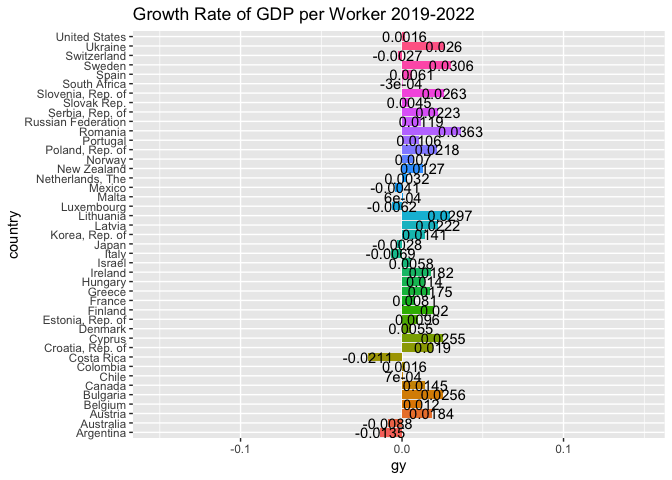
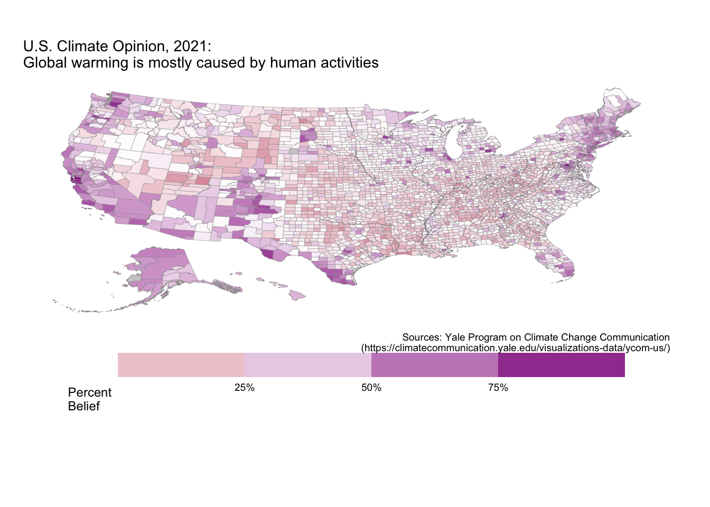

imf_growth <- read.csv(url('https://bcdanl.github.io/data/imf_growth_quarterly.csv'))
imf <- ggplot(data = imf_growth,
mapping = aes(x = gy, y = country, fill = country))
imf2 <- imf + geom_col() + guides( fill ="none" )
imf_anim <- imf2 +
transition_states(quarter, state_length = 1)+
labs(title = "Growth Rate of GDP per Worker 2019-2022")+
geom_text(aes(label = round(gy, digits = 4)))
animate(imf_anim, fps = 6, renderer = gifski_renderer("growthrate.gif"))
## Warning: package 'ggiraph' was built under R version 4.0.5climate_opinion <- read.csv(
'https://bcdanl.github.io/data/climate_opinion_2021.csv')
county_map<-socviz::county_map
county_map$id <- as.integer(county_map$id)
county_full<- left_join(county_map, climate_opinion, by = "id")
na_map <- function(yr){
county_full_na <- filter(county_full, is.na(belief)) %>%
select(-belief)%>%
mutate( belief = yr)
}
for (val in levels( factor(county_full$belief))) {
county_full <-rbind(county_full, na_map(val))
}
county_full <- county_full%>%
mutate(belief_desc = ifelse(belief == "happening",
"Global warming is happening.",
"Global warming is mostly caused by human activites."))
county_full_1 <- county_full %>%
filter(belief == "human")
p1 <- ggplot(data = county_full_1) +
geom_polygon_interactive(mapping = aes(x = long, y = lat,
group = group, fill = perc, text = GeoName ),
color = "grey60", size = 0.1)## Warning: Ignoring unknown aesthetics: textp2 <- p1 + scale_fill_gradient2(
low = "maroon",
high = "magenta4",
mid = "white",
na.value = "grey80",
midpoint = 50,
breaks = c(quantile(county_full$perc, 0, na.rm = T),
quantile(county_full$perc, .25, na.rm = T),
quantile(county_full$perc, .5, na.rm = T),
quantile(county_full$perc, .75, na.rm = T),
quantile(county_full$perc, 1, na.rm = T)),
guide = guide_colorbar( direction = "vertical",
barwidth = 25,
title.vjust = 1)
)
clim <- p2 + labs(fill = "Percent\nBelief", title = "U.S. Climate Opinion, 2021:\nGlobal warming is mostly caused by human activities",
caption = "Sources: Yale Program on Climate Change Communication\n (https://climatecommunication.yale.edu/visualizations-data/ycom-us/)") +
theme_map() +
theme(plot.margin = unit( c(1, 1, 3.85, 0.5), "cm"),
legend.position = c(.5, -.2),
legend.justification = c(.5,.5),
strip.background = element_rect( colour = "black",
fill = "white",
color = "grey80")) +
guides(fill = guide_coloursteps(direction = "horizontal", barwidth = 25, title.vjust = -1))
clim
The effect of the COVID-19 Pandemic on economic growth is shown in the animation above.